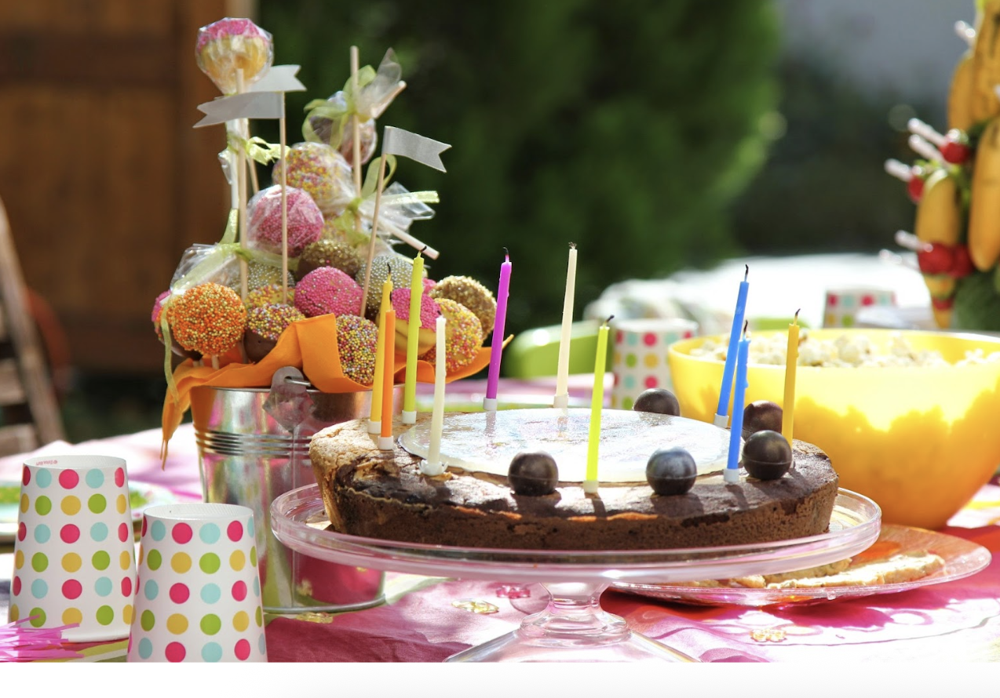
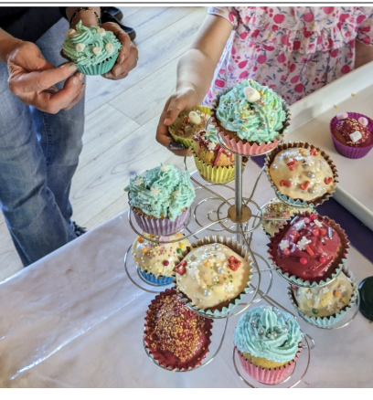
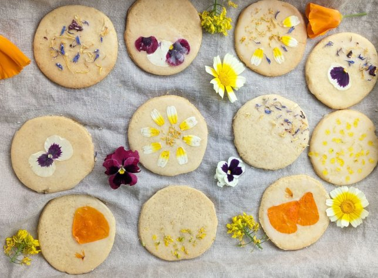

Anniversaires Cuisine à Lyon
Ateliers ludiques et encadrés pour enfants et ados (6-17 ans)
Une idée d'anniversaire originale, sans stress pour les parents
Réserver un anniversairePourquoi choisir un atelier cuisine anniversaire ?
Vous cherchez une idée d'activité d'anniversaire enfant à Lyon qui change des formules classiques ? Les ateliers cuisine anniversaire proposent une expérience ludique, créative et encadrée, pensée pour le plaisir des enfants et la tranquillité des parents.
Pour les enfants
Une activité participative et valorisante. Le plaisir de manipuler, créer et goûter. Des souvenirs concrets à emporter.
Pour les parents
Une organisation simple et fluide. Un atelier encadré par une professionnelle. Aucun matériel ni préparation à prévoir.
Des ateliers par tranche d'âge
🎂 Anniversaire cuisine – 6 à 8 ans
Découvrir, manipuler, s'amuser
- Recettes simples, visuelles et accessibles
- Gestes sécurisés et accompagnés
- Activité rythmée et joyeuse
Objectif : prendre confiance, manipuler, goûter et partager.
🎂 Anniversaire cuisine – 9 à 11 ans
Créer, coopérer, être fier de soi
- Recettes un peu plus techniques
- Travail en petits groupes
- Décoration et personnalisation des créations
Objectif : autonomie, créativité et esprit d'équipe.
🎂 Anniversaire cuisine – Ados 12-17 ans
Cuisiner "comme des grands", dans une ambiance détendue
- Recettes tendance ou thématiques
- Plus de liberté et de responsabilités
- Dégustation finale type goûter revisité
Objectif : se retrouver, créer ensemble et partager un vrai moment.
Comment se déroule un anniversaire ?
L'atelier est une expérience clé en main, encadrée par une cheffe professionnelle.
Accueil du groupe
Présentation de l'atelier, mise en confiance, rappel des règles.
Atelier cuisine encadré
Réalisation des recettes pas à pas (cupcakes, brownie, cookies, etc.). Chaque enfant participe activement.
Moment anniversaire
Un gâteau avec des bougies est prévu pour célébrer l'anniversaire. Temps de dégustation et de partage.
Fin de l'atelier
Chaque enfant repart avec sa création et une fiche recette pour recommencer à la maison.
Encadrement par notre "Cheffe Caroline"
Cheffe cuisinière et animatrice diplômée, Caroline transmet une cuisine colorée, gourmande et accessible, dans un esprit d'échange et de convivialité.
📍 Lieu des ateliers
Comptoir Sauvage
1 rue du Pavillon – 69004 Lyon Croix-Rousse
Un lieu chaleureux, adapté aux enfants et sécurisé.
Tarifs et informations pratiques
Groupe de 7 enfants inclus
Groupes plus importants : sur devis
Le tarif comprend :
- 2 heures d'atelier (1h30 cuisine + 30 min goûter)
- Tous les ingrédients et le matériel
- Le goûter préparé ensemble
- Le gâteau d'anniversaire avec bougies
- Une boisson maison et l'encadrement complet
Jours et horaires
Mercredi : 15h30 – 17h30
Vendredi : 16h30 – 18h30
Samedi : 16h00 – 18h00
Adaptations possibles : allergies, régimes spécifiques (à préciser lors de la réservation)
Ils en parlent mieux que nous
Parce qu'un anniversaire réussi, ce sont surtout des enfants heureux… et des parents rassurés.
"J'ai préféré faire la décoration et surtout manger les cupcakes !"Tim, 13 ans
"J'ai aimé tout faire, mais surtout la déco et la manger !"Charly, 10 ans
FAQ – Anniversaire cuisine enfant à Lyon
Organiser un anniversaire
Contactez-nous pour demander un devis personnalisé, organiser un anniversaire pour plus de 7 enfants, choisir une thématique spécifique ou réserver une date.
Réponse rapide, devis sans engagement.
Demander un devis